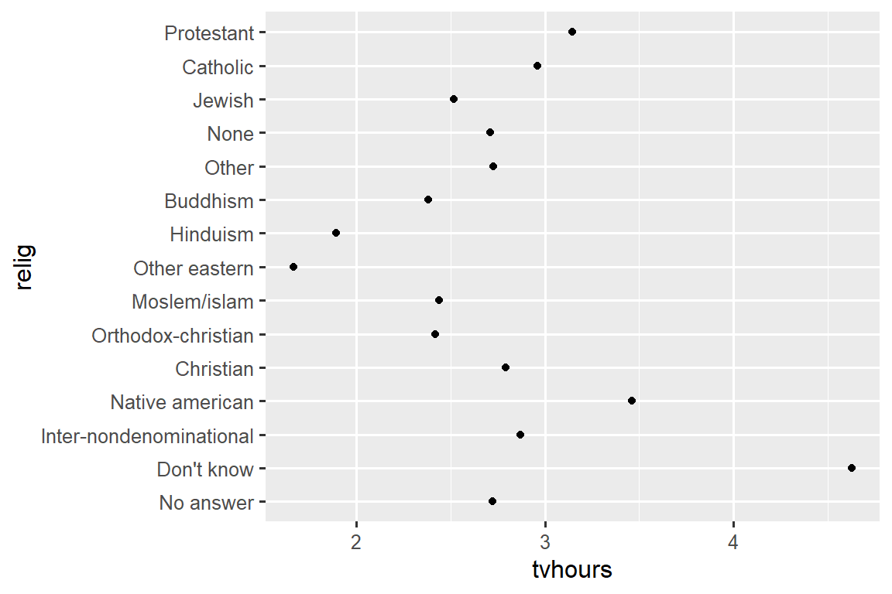
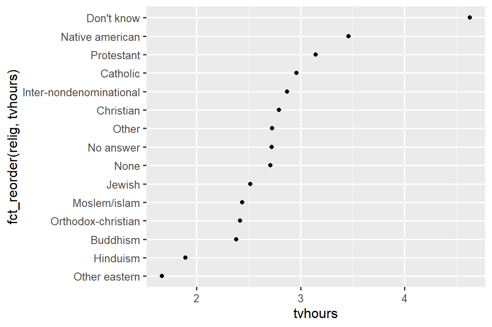
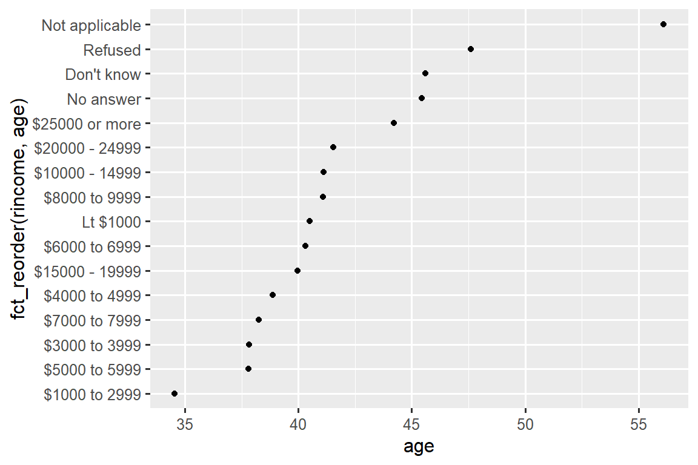
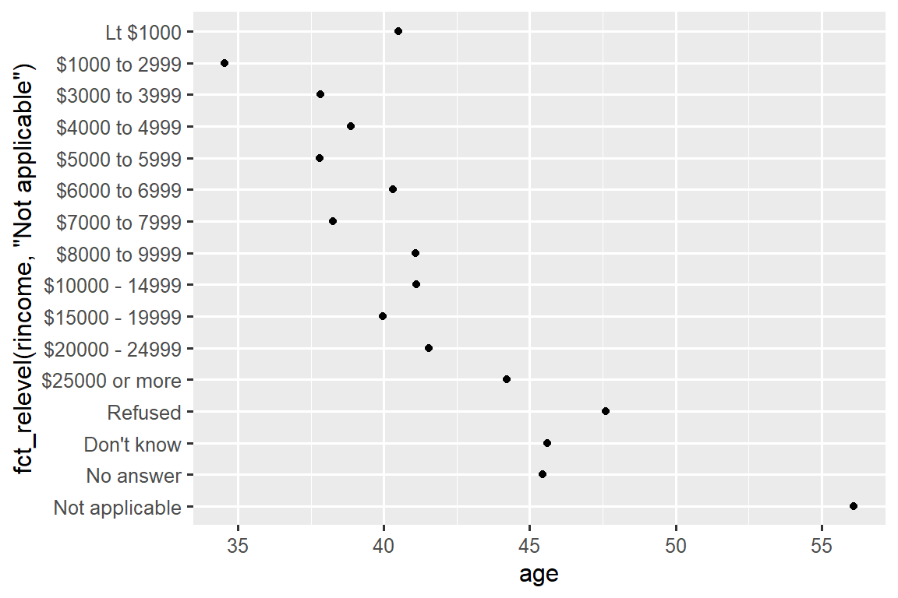
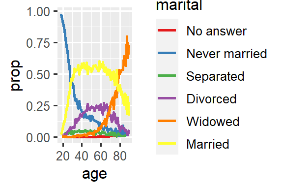
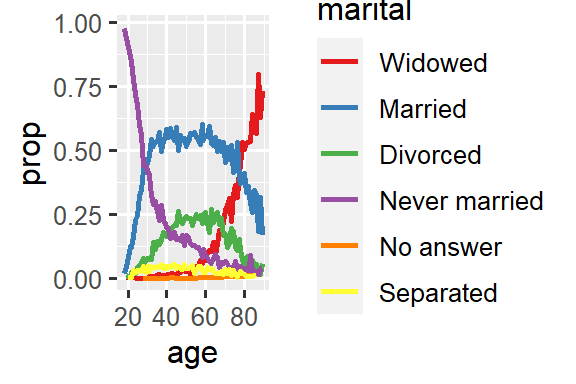
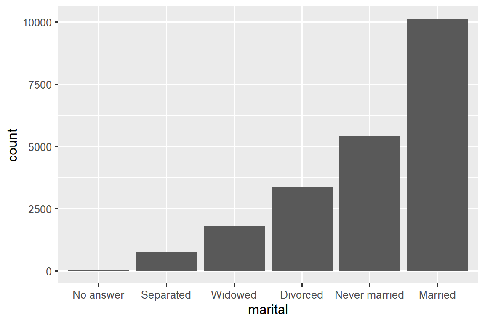

library(tidyverse)
#> Warning: package 'tidyverse' was built under R version 4.2.3
#> Warning: package 'ggplot2' was built under R version 4.2.3
#> Warning: package 'tibble' was built under R version 4.2.3
#> Warning: package 'tidyr' was built under R version 4.2.3
#> Warning: package 'readr' was built under R version 4.2.3
#> Warning: package 'purrr' was built under R version 4.2.3
#> Warning: package 'dplyr' was built under R version 4.2.3
#> Warning: package 'stringr' was built under R version 4.2.2
#> Warning: package 'forcats' was built under R version 4.2.3
#> Warning: package 'lubridate' was built under R version 4.2.317 Factors
You are reading the work-in-progress second edition of R for Data Science. This chapter is largely complete and just needs final proof reading. You can find the complete first edition at https://r4ds.had.co.nz.
17.1 Introduction
Factors are used for categorical variables, variables that have a fixed and known set of possible values. They are also useful when you want to display character vectors in a non-alphabetical order.
We’ll start by motivating why factors are needed for data analysis1 and how you can create them with factor(). We’ll then introduce you to the gss_cat dataset which contains a bunch of categorical variables to experiment with. You’ll then use that dataset to practice modifying the order and values of factors, before we finish up with a discussion of ordered factors.
17.1.1 Prerequisites
Base R provides some basic tools for creating and manipulating factors. We’ll supplement these with the forcats package, which is part of the core tidyverse. It provides tools for dealing with categorical variables (and it’s an anagram of factors!) using a wide range of helpers for working with factors.
17.2 Factor basics
Imagine that you have a variable that records month:
x1 <- c("Dec", "Apr", "Jan", "Mar")Using a string to record this variable has two problems:
-
There are only twelve possible months, and there’s nothing saving you from typos:
x2 <- c("Dec", "Apr", "Jam", "Mar") -
It doesn’t sort in a useful way:
sort(x1) #> [1] "Apr" "Dec" "Jan" "Mar"
You can fix both of these problems with a factor. To create a factor you must start by creating a list of the valid levels:
month_levels <- c(
"Jan", "Feb", "Mar", "Apr", "May", "Jun",
"Jul", "Aug", "Sep", "Oct", "Nov", "Dec"
)Now you can create a factor:
And any values not in the level will be silently converted to NA:
y2 <- factor(x2, levels = month_levels)
y2
#> [1] Dec Apr <NA> Mar
#> Levels: Jan Feb Mar Apr May Jun Jul Aug Sep Oct Nov DecThis seems risky, so you might want to use forcats::fct() instead:
y2 <- fct(x2, levels = month_levels)
#> Error in `fct()`:
#> ! All values of `x` must appear in `levels` or `na`
#> ℹ Missing level: "Jam"If you omit the levels, they’ll be taken from the data in alphabetical order:
factor(x1)
#> [1] Dec Apr Jan Mar
#> Levels: Apr Dec Jan MarSorting alphabetically is slightly risky because not every computer will sort strings in the same way. So forcats::fct() orders by first appearance:
fct(x1)
#> [1] Dec Apr Jan Mar
#> Levels: Dec Apr Jan MarIf you ever need to access the set of valid levels directly, you can do so with levels():
levels(y2)
#> [1] "Jan" "Feb" "Mar" "Apr" "May" "Jun" "Jul" "Aug" "Sep" "Oct" "Nov" "Dec"You can also create a factor when reading your data with readr with col_factor():
csv <- "
month,value
Jan,12
Feb,56
Mar,12"
df <- read_csv(csv, col_types = cols(month = col_factor(month_levels)))
df$month
#> [1] Jan Feb Mar
#> Levels: Jan Feb Mar Apr May Jun Jul Aug Sep Oct Nov Dec17.4 Modifying factor order
It’s often useful to change the order of the factor levels in a visualization. For example, imagine you want to explore the average number of hours spent watching TV per day across religions:
relig_summary <- gss_cat |>
group_by(relig) |>
summarize(
tvhours = mean(tvhours, na.rm = TRUE),
n = n()
)
ggplot(relig_summary, aes(x = tvhours, y = relig)) +
geom_point()
It is hard to read this plot because there’s no overall pattern. We can improve it by reordering the levels of relig using fct_reorder(). fct_reorder() takes three arguments:
-
f, the factor whose levels you want to modify. -
x, a numeric vector that you want to use to reorder the levels. - Optionally,
fun, a function that’s used if there are multiple values ofxfor each value off. The default value ismedian.
ggplot(relig_summary, aes(x = tvhours, y = fct_reorder(relig, tvhours))) +
geom_point()
Reordering religion makes it much easier to see that people in the “Don’t know” category watch much more TV, and Hinduism & Other Eastern religions watch much less.
As you start making more complicated transformations, we recommend moving them out of aes() and into a separate mutate() step. For example, you could rewrite the plot above as:
relig_summary |>
mutate(
relig = fct_reorder(relig, tvhours)
) |>
ggplot(aes(x = tvhours, y = relig)) +
geom_point()What if we create a similar plot looking at how average age varies across reported income level?
rincome_summary <- gss_cat |>
group_by(rincome) |>
summarize(
age = mean(age, na.rm = TRUE),
n = n()
)
ggplot(rincome_summary, aes(x = age, y = fct_reorder(rincome, age))) +
geom_point()
Here, arbitrarily reordering the levels isn’t a good idea! That’s because rincome already has a principled order that we shouldn’t mess with. Reserve fct_reorder() for factors whose levels are arbitrarily ordered.
However, it does make sense to pull “Not applicable” to the front with the other special levels. You can use fct_relevel(). It takes a factor, f, and then any number of levels that you want to move to the front of the line.
ggplot(rincome_summary, aes(x = age, y = fct_relevel(rincome, "Not applicable"))) +
geom_point()
Why do you think the average age for “Not applicable” is so high?
Another type of reordering is useful when you are coloring the lines on a plot. fct_reorder2(f, x, y) reorders the factor f by the y values associated with the largest x values. This makes the plot easier to read because the colors of the line at the far right of the plot will line up with the legend.
by_age <- gss_cat |>
filter(!is.na(age)) |>
count(age, marital) |>
group_by(age) |>
mutate(
prop = n / sum(n)
)
ggplot(by_age, aes(x = age, y = prop, color = marital)) +
geom_line(linewidth = 1) +
scale_color_brewer(palette = "Set1")
ggplot(by_age, aes(x = age, y = prop, color = fct_reorder2(marital, age, prop))) +
geom_line(linewidth = 1) +
scale_color_brewer(palette = "Set1") +
labs(color = "marital") {fig-alt=’A line plot with age on the x-axis and proportion on the y-axis. There is one line for each category of marital status: no answer, never married, separated, divorced, widowed, and married. It is a little hard to read the plot because the order of the legend is unrelated to the lines on the plot.
Rearranging the legend makes the plot easier to read because the legend colors now match the order of the lines on the far right of the plot. You can see some unsurprising patterns: the proportion never married decreases with age, married forms an upside down U shape, and widowed starts off low but increases steeply after age 60.’ width=288}
{fig-alt=’A line plot with age on the x-axis and proportion on the y-axis. There is one line for each category of marital status: no answer, never married, separated, divorced, widowed, and married. It is a little hard to read the plot because the order of the legend is unrelated to the lines on the plot.
Rearranging the legend makes the plot easier to read because the legend colors now match the order of the lines on the far right of the plot. You can see some unsurprising patterns: the proportion never married decreases with age, married forms an upside down U shape, and widowed starts off low but increases steeply after age 60.’ width=288}
Finally, for bar plots, you can use fct_infreq() to order levels in decreasing frequency: this is the simplest type of reordering because it doesn’t need any extra variables. Combine it with fct_rev() if you want them in increasing frequency so that in the bar plot largest values are on the right, not the left.
gss_cat |>
mutate(marital = marital |> fct_infreq() |> fct_rev()) |>
ggplot(aes(x = marital)) +
geom_bar()
17.4.1 Exercises
There are some suspiciously high numbers in
tvhours. Is the mean a good summary?For each factor in
gss_catidentify whether the order of the levels is arbitrary or principled.Why did moving “Not applicable” to the front of the levels move it to the bottom of the plot?
17.5 Modifying factor levels
More powerful than changing the orders of the levels is changing their values. This allows you to clarify labels for publication, and collapse levels for high-level displays. The most general and powerful tool is fct_recode(). It allows you to recode, or change, the value of each level. For example, take the partyid variable from the gss_cat data frame:
gss_cat |> count(partyid)
#> # A tibble: 10 × 2
#> partyid n
#> <fct> <int>
#> 1 No answer 154
#> 2 Don't know 1
#> 3 Other party 393
#> 4 Strong republican 2314
#> 5 Not str republican 3032
#> 6 Ind,near rep 1791
#> # ℹ 4 more rowsThe levels are terse and inconsistent. Let’s tweak them to be longer and use a parallel construction. Like most rename and recoding functions in the tidyverse, the new values go on the left and the old values go on the right:
gss_cat |>
mutate(
partyid = fct_recode(partyid,
"Republican, strong" = "Strong republican",
"Republican, weak" = "Not str republican",
"Independent, near rep" = "Ind,near rep",
"Independent, near dem" = "Ind,near dem",
"Democrat, weak" = "Not str democrat",
"Democrat, strong" = "Strong democrat"
)
) |>
count(partyid)
#> # A tibble: 10 × 2
#> partyid n
#> <fct> <int>
#> 1 No answer 154
#> 2 Don't know 1
#> 3 Other party 393
#> 4 Republican, strong 2314
#> 5 Republican, weak 3032
#> 6 Independent, near rep 1791
#> # ℹ 4 more rowsfct_recode() will leave the levels that aren’t explicitly mentioned as is, and will warn you if you accidentally refer to a level that doesn’t exist.
To combine groups, you can assign multiple old levels to the same new level:
gss_cat |>
mutate(
partyid = fct_recode(partyid,
"Republican, strong" = "Strong republican",
"Republican, weak" = "Not str republican",
"Independent, near rep" = "Ind,near rep",
"Independent, near dem" = "Ind,near dem",
"Democrat, weak" = "Not str democrat",
"Democrat, strong" = "Strong democrat",
"Other" = "No answer",
"Other" = "Don't know",
"Other" = "Other party"
)
)Use this technique with care: if you group together categories that are truly different you will end up with misleading results.
If you want to collapse a lot of levels, fct_collapse() is a useful variant of fct_recode(). For each new variable, you can provide a vector of old levels:
gss_cat |>
mutate(
partyid = fct_collapse(partyid,
"other" = c("No answer", "Don't know", "Other party"),
"rep" = c("Strong republican", "Not str republican"),
"ind" = c("Ind,near rep", "Independent", "Ind,near dem"),
"dem" = c("Not str democrat", "Strong democrat")
)
) |>
count(partyid)
#> # A tibble: 4 × 2
#> partyid n
#> <fct> <int>
#> 1 other 548
#> 2 rep 5346
#> 3 ind 8409
#> 4 dem 7180Sometimes you just want to lump together the small groups to make a plot or table simpler. That’s the job of the fct_lump_*() family of functions. fct_lump_lowfreq() is a simple starting point that progressively lumps the smallest groups categories into “Other”, always keeping “Other” as the smallest category.
gss_cat |>
mutate(relig = fct_lump_lowfreq(relig)) |>
count(relig)
#> # A tibble: 2 × 2
#> relig n
#> <fct> <int>
#> 1 Protestant 10846
#> 2 Other 10637In this case it’s not very helpful: it is true that the majority of Americans in this survey are Protestant, but we’d probably like to see some more details! Instead, we can use the fct_lump_n() to specify that we want exactly 10 groups:
gss_cat |>
mutate(relig = fct_lump_n(relig, n = 10)) |>
count(relig, sort = TRUE)
#> # A tibble: 10 × 2
#> relig n
#> <fct> <int>
#> 1 Protestant 10846
#> 2 Catholic 5124
#> 3 None 3523
#> 4 Christian 689
#> 5 Other 458
#> 6 Jewish 388
#> # ℹ 4 more rowsRead the documentation to learn about fct_lump_min() and fct_lump_prop() which are useful in other cases.
17.5.1 Exercises
How have the proportions of people identifying as Democrat, Republican, and Independent changed over time?
How could you collapse
rincomeinto a small set of categories?Notice there are 9 groups (excluding other) in the
fct_lumpexample above. Why not 10? (Hint: type?fct_lump, and find the default for the argumentother_levelis “Other”.)
17.6 Ordered factors
Before we go on, there’s a special type of factor that needs to be mentioned briefly: ordered factors. Ordered factors, created with ordered(), imply a strict ordering and equal distance between levels: the first level is “less than” the second level by the same amount that the second level is “less than” the third level, and so on. You can recognize them when printing because they use < between the factor levels:
In practice, ordered() factors behave very similarly to regular factors. There are only two places where you might notice different behavior:
- If you map an ordered factor to color or fill in ggplot2, it will default to
scale_color_viridis()/scale_fill_viridis(), a color scale that implies a ranking. - If you use an ordered function in a linear model, it will use “polygonal contrasts”. These are mildly useful, but you are unlikely to have heard of them unless you have a PhD in Statistics, and even then you probably don’t routinely interpret them. If you want to learn more, we recommend
vignette("contrasts", package = "faux")by Lisa DeBruine.
Given the arguable utility of these differences, we don’t generally recommend using ordered factors.
17.7 Summary
This chapter introduced you to the handy forcats package for working with factors, introducing you to the most commonly used functions. forcats contains a wide range of other helpers that we didn’t have space to discuss here, so whenever you’re facing a factor analysis challenge that you haven’t encountered before, I highly recommend skimming the reference index to see if there’s a canned function that can help solve your problem.
If you want to learn more about factors after reading this chapter, we recommend reading Amelia McNamara and Nicholas Horton’s paper, Wrangling categorical data in R. This paper lays out some of the history discussed in stringsAsFactors: An unauthorized biography and stringsAsFactors = <sigh>, and compares the tidy approaches to categorical data outlined in this book with base R methods. An early version of the paper helped motivate and scope the forcats package; thanks Amelia & Nick!
In the next chapter we’ll switch gears to start learning about dates and times in R. Dates and times seem deceptively simple, but as you’ll soon see, the more you learn about them, the more complex they seem to get!
They’re also really important for modelling.↩︎